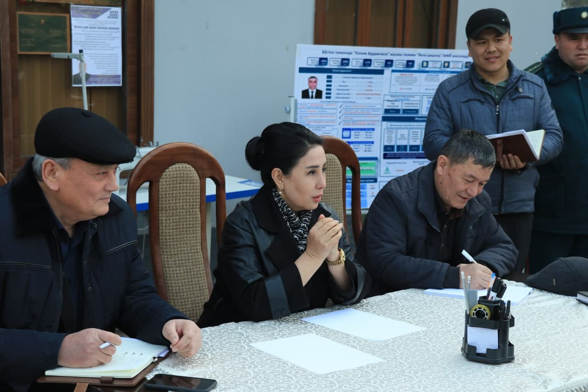

Kuni kecha O‘zbekistonda faoliyat yurituvchi ayol hokimlarning biri ishdan olindi, ikkinchisi esa hokimlikdan qo‘mita raisligiga ko‘tarildi.Xo‘sh, har ikki holat ayni kunda amal kursisida o‘tirgan ayol hokimlarning qanday xulosa qilishiga va kelajakdagi ish faoliyatlarida nimaga e’tibor qaratishlariga turtki bo‘ldi?
“Daryo” muxbirlari ayni kunda faoliyat yuritayotgan ayol hokimlar — Andijon viloyatining Bo‘ston tumani hokimi Sanobarxon Nosirova,Samarqand viloyatining Kattaqo‘rg‘on shahri hokimi, senator Gavhar Alimova hamda Sirdaryo viloyati Boyovut tumani hokimi senator Dilfuza O‘ralovalarga yuzlanib, bu haqda fikrlashdi.
Sanobarxon Nosirova
Foto:Bo'ston tumani hokimligi
Sobiq hokimning qilgan xatolari va ishdan olinish sabablari OAVda to‘liq yoritildi.
Qarshi tumani hokimi Maqsuda Mustafoyeva bilan hali yaxshi tanishib ham ulgurmagandim. Lekin qilgan xatolari va ishdan ozod qilinishi sabablari OAVda to‘liq yoritildi. Davlat rahbari qanday xulosa qilgan bo‘lsa, demak buning o‘z sabablari
bor va men buni to‘g‘ri deb bilaman. Barcha ayol hokimlar bundan xulosa qilib, ko‘zini kattaroq ochdi, nazarimda.
Prezidentimiz gender tenglikni e’tiborga olib, ayollarni ham hokimlikka tayinladi. Erkaklar bilan tengma-teng ishlashiga sharoit yaratib berdi. Demak, biz ayollar ham bu e’tiborga shijoat, to‘g‘rilik, poklik, halollik bilan javob
berishimiz kerak. Bilishimcha, Maqsuda opa xatoga yo‘l qo‘ygan va yuqorida sanab o‘tganlarimni e’tiborsiz qoldirgan. Zulayho Bahriddinovnaga keladigan bo‘lsak, ular o‘z tajribasiga ega rahbar. U kishi o‘z ishiga sidqidildan yondashgani,
berilgan vazifalarni halollik bilan bajarib kelgani uchun ham viloyatlarga doim xotin-qizlar ishini tekshirish uchun ishchi guruh tarkibida ishonchli vakil sifatida yuborilardi. Zulayho Bahriddinovna ishonchni oqlagani uchun ham To‘raqo‘rg‘on
tumaniga hokim yetib tayinlangandi. U kishi ikki yil davomida erkak hokimlar qatori xalqni rozi qilish uchun o‘zini ayamadi. Natijada bugun qo‘mitaga rahbar bo‘ldi”
Sanobarxon Nosirova, Andijon viloyatining Bo‘ston tumani hokimi
Gavhar Alimova
Foto:"Daryo"/Madina tumani
Zulayho Bahriddinovna ayollar bilan ishlashda katta tajribaga ega, Maqsuda Sayfullayevna esa kadr tanlashda xatoga yo‘l qo‘ygan bo‘lishi mumkin
To‘raqo‘rg‘on hokimi Zulayho Bahriddinovnani ko‘p yildan beri yaxshi bilaman. Ulardagi eng zo‘r fazilatlar shuki, juda kamtar, halol, mehnatkash va fidoyi ayol. Xotin-qizlar dardini yaxshi tushunadigan, har qanday masalaga yechim topib, yordam
berishga harakat qiladigan inson. Yangi qo‘mitaga rahbar etib tayinlanganini eshitib, juda quvondim. Ayollar bilan ishlashda ham katta tajribaga ega.
Qarshi tumanining sobiq hokimi Maqsuda Sayfullayevnaning aynan nima sababdan ishdan ketganini aniq bilmayman, xatolarini ham sezmaganman. Maqsuda Sayfullayevnaning ishini bevosita o‘rganmaganman, ich-ichiga kirmaganman. Balki kadr
tanlashda xatoga yo‘l qo‘ygandir, atrofidagilar qattiq ishonib qolgandir. Qo‘l ostida o‘z manfaatini o‘ylaydigan, fidoyi bo‘lmagan kadrlar bo‘lgandir. Bu albatta, shaxsiy fikrim. Lekin ularni biror jiddiy xatoga yo‘l qo‘yganini eshitmaganman.
Har qanday vaziyatda ham ayollarning hurmatini joyiga qo‘yish kerak deb o‘ylayman. Agar xato qilayotgan bo‘lsa, atrofidagilar uni to‘g‘rilashga yordam berishi lozim. Masalan, o‘zim xatoga yo‘l qo‘ymaslik uchun viloyat hokimi bilan qo‘ng‘iroqlashib,
maslahat so‘rayman, shahar faxriylari bilan bamaslahat ish olib boraman”
Gavhar Alimova, Kattaqo‘rg‘on shahar hokimi, senator
Dilfuza O‘ralova.
Foto:"Darto"/Madina tumani
Ayol hokimlarni keng jamoatchilik kuzatib, nazorat qilib turibdi
Zulayho Bahriddinovna bilan munosabatimiz yaxshi, ularni yangi mas’uliyatli lavozim bilan tabriklayman va qo‘llab-quvvatlayman. Sobiq xotin-qizlar qo‘mitasida ham faoliyat yuritgan, tajriba orttirgan va rahbar ayol sifatida tan olingan. Fikrini fuqarolarga
to‘g‘ri tushuntiradigan, og‘ir-bosiq, so‘zida tura oladigan ayollardan biri. U kishiga hurmatim baland. Oila va xotin-qizlar davlat qo‘mitasining munosib rahbari bo‘lishi, davlatimiz rahbari imzolagan yangi qarordagi har bir yo‘nalishni
tizimli yo‘lga solishiga ishonaman.
Biz ayol hokimlarni hozir keng jamoatchilik kuzatib, nazorat qilib turibdi. Ayol hokim sifatida agrar sohada ish olib borish baribir qiyinchilik tug‘dirishiga amin bo‘ldim. Qarshi tumanining sobiq hokimi Maqsuda Sayfullayevnaning
qishloq xo‘jaligi yo‘nalishida tajribasi kamroq edi, deb o‘ylayman. Lekin u ham yetuk va uzoqni ko‘ra oladigan kadrlardan biri edi. Sog‘lig‘i tufayli o‘z arizasiga ko‘ra ishdan ketgani haqida eshitdim. Sog‘liq inson uchun har doim birinchi
o‘rinda bo‘lishi kerak”.
Dilfuza O‘ralova, Boyovut tumani hokimi, senator
Umidjon Mamarasulov hamda Mirolim Isajonovlar suhbatlashdi.